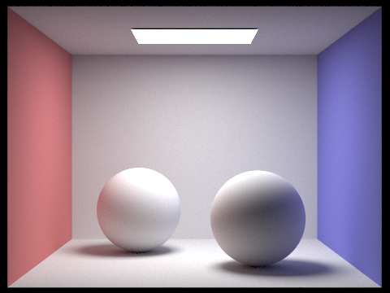

CS184/284A Spring 2025 Homework 3 Write-Up
Link to webpage: cal-cs184-student.github.io/cs284a-hw-webpages-jasper/
Link to GitHub repository: github.com/cal-cs184-student/cs284a-hw-webpages-jasper

Overview
In this project, I implemented a physically-based path tracer that simulates light interactions to create photorealistic images. Starting with basic ray generation and primitive intersection, I developed a rendering pipeline enhanced by a Bounding Volume Hierarchy (BVH) acceleration structure that dramatically improved performance for complex scenes. I implemented direct illumination using both uniform hemisphere sampling and importance sampling of light sources, demonstrating how targeted sampling significantly reduces noise. The path tracer was extended to support global illumination through recursive ray bounces, capturing indirect lighting effects like color bleeding and soft shadows. Finally, I added adaptive sampling to intelligently allocate computational resources, focusing more samples on complex areas like shadow boundaries and geometric details while using fewer samples in uniform regions. This project deepened my understanding of computational geometry, Monte Carlo methods, and physically-based rendering techniques.
Part 1: Ray Generation and Scene Intersection
In this part, I implemented camera ray generation and primitive intersection testing, which are fundamental components for rendering 3D scenes.
Ray Generation
I implemented the Camera::generate_ray() function to convert 2D image coordinates to 3D rays. The process involves:
- Converting normalized coordinates to points on the camera's sensor plane
- Creating a ray from the camera through this point
- Transforming the ray to world space using the camera-to-world matrix
The resulting rays correctly sample the scene according to the camera's position, orientation, and field of view.
Triangle Intersection
For triangle intersection, I implemented the Möller-Trumbore algorithm which efficiently computes both the intersection point and barycentric coordinates. The algorithm:
- Computes vectors for two edges of the triangle
- Uses cross products to solve for the intersection parameters
- Validates the barycentric coordinates to ensure the point is inside the triangle
- Checks if the intersection distance is within the ray's valid range
For valid intersections, I calculate the normal by interpolating the triangle's vertex normals using barycentric coordinates.
Sphere Intersection
For sphere intersection, I solved the quadratic equation that determines where a ray intersects a sphere. The implementation:
- Forms a quadratic equation based on the ray and sphere parameters
- Solves for the intersection distances
- Chooses the closest valid intersection
- Computes the normal at the intersection point
Results with Normal Shading
Below are renders showing normal shading for various scenes. The colors represent surface normals, providing a clear visualization of the geometry.

|
|
Part 2: Bounding Volume Hierarchy
In this part, I implemented a Bounding Volume Hierarchy (BVH) to accelerate ray intersection tests, dramatically improving rendering performance for complex scenes.
BVH Construction
My BVH construction algorithm recursively divides the scene primitives into subgroups:
- For each node, I first compute a bounding box containing all primitives
- If the number of primitives is small enough, I create a leaf node
- Otherwise, I split primitives along the longest axis of the bounding box
- For the splitting point, I use the midpoint of the bounding box along the chosen axis
- Primitives are assigned to left or right children based on their centroid positions
This spatial partitioning approach ensures that rays can quickly eliminate large portions of the scene without testing individual primitives for intersection.
Bounding Box Intersection
I implemented an efficient ray-box intersection test that:
- Computes the intersection points of the ray with each of the three pairs of axis-aligned planes
- Finds the latest entry point and earliest exit point across all three dimensions
- Returns true if the entry occurs before the exit and within the ray's valid range
BVH Traversal
My BVH traversal algorithm recursively tests rays against nodes:
- First checks if the ray intersects the node's bounding box
- For interior nodes, recursively tests both children if the box is hit
- For leaf nodes, tests all contained primitives for intersection
- For
has_intersection(), returns immediately after finding any hit - For
intersect(), checks all relevant nodes to find the closest hit
The BVH acceleration structure dramatically improved rendering performance. This transforms the ray-primitive intersection time complexity from O(n) to approximately O(log n), making it feasible to render scenes with tens of thousands of triangles in under a second. The most significant improvements were seen in models with high triangle counts, where naive intersection testing becomes prohibitively expensive.
Complex Scenes
Below are renders of complex models that would be impractical to render without BVH acceleration:
|
|
|

|

|
Performance Results
| Scene | Without BVH | With BVH | Speedup |
|---|---|---|---|
| bench.dae | 570.09 seconds | 0.11 seconds | ~5181× |
| beast.dae | 890.56 seconds | 0.16 seconds | ~5566× |
| maxplanck.dae | 532.31 seconds | 0.223 seconds | ~2387× |
The BVH acceleration structure dramatically improved rendering performance, with speedups of 2387-5566× for complex models. This transforms the ray-primitive intersection time complexity from O(n) to approximately O(log n), making it feasible to render scenes with tens of thousands of primitives in under a second.
Part 3: Direct Illumination
In this part, I implemented direct illumination using two different sampling strategies: uniform hemisphere sampling and importance sampling of light sources.
Diffuse BSDF Implementation
First, I implemented the diffuse BSDF (Bidirectional Scattering Distribution Function) for Lambertian surfaces:
- The function returns the reflectance divided by π for valid incoming and outgoing directions
- This represents a material that scatters light equally in all directions, following Lambert's cosine law
Uniform Hemisphere Sampling
In the estimate_direct_lighting_hemisphere function, I implemented direct lighting estimation by sampling directions uniformly in the hemisphere above the surface point:
- Generate random directions on the hemisphere using the hemisphere sampler
- Transform these directions from object space to world space
- Cast shadow rays to determine if these directions intersect with light sources
- For each ray that hits a light source, compute the contribution using the rendering equation
- Average the results over all samples
Importance Sampling of Lights
In the estimate_direct_lighting_importance function, I implemented a more efficient approach that samples lights directly:
- For each light source in the scene, sample points on the light's surface
- For delta lights (point lights), sample only once
- For area lights, take multiple samples and average them
- Cast shadow rays to determine visibility between the surface point and each light sample
- For unoccluded samples, compute the contribution using the rendering equation, accounting for the PDF of the light sampling
Rendering Results Comparison
Below are Cornell box scenes rendered with both sampling methods:
| Uniform Hemisphere Sampling | Importance Sampling |
|---|---|
Noise Level Comparison with Different Light Ray Counts
Below is a comparison of soft shadows using importance sampling with different numbers of light rays:
| 1 light ray per light (noisy shadows) | 4 light rays per light |
|---|---|
| 16 light rays per light | 64 light rays per light (smooth shadows) |
Analysis of Sampling Methods
Importance sampling works much better than uniform hemisphere sampling. Many random hemisphere rays miss the lights completely, creating noisy images. By focusing samples directly on light sources, importance sampling gives cleaner results with fewer samples. This is helpful for small lights that would rarely be hit by random rays. Point lights are basically impossible to render with hemisphere sampling, but work fine with importance sampling. The shadow comparison clearly shows how importance sampling creates smoother shadows with way less work.
Part 4: Global Illumination
In this part, I implemented indirect illumination to simulate the full global illumination rendering equation, allowing light to bounce multiple times throughout the scene.
Indirect Lighting Implementation
The implementation of global illumination focuses on the at_least_one_bounce_radiance function, which:
- First calculates direct lighting using the methods from Part 3
- Then recursively traces additional bounces of light by sampling new ray directions based on the BSDF
- Implements Russian Roulette for path termination with a probability of 0.3
- Handles both accumulated and non-accumulated bounce modes
For each recursive bounce, the function:
- Samples a new direction using the surface's BSDF
- Traces a ray in that direction to find the next intersection
- Recursively computes the radiance from that intersection
- Properly scales the result by the BSDF value, cosine term, PDF, and Russian Roulette probability
Global Illumination Results
Below is a scene rendered with full global illumination using 1024 samples per pixel:
Direct vs. Indirect Illumination
Comparison of direct-only and indirect-only illumination for the Cornell Box:
|
|
|
Direct illumination shows sharp shadows and high contrast, while indirect illumination captures color bleeding from the walls onto the bunny and softens dark areas with ambient light.
Contribution of Different Light Bounces
The images below show individual bounces of light (non-accumulated):
|
|
|
|
|
|

|
|
The 2nd bounce shows how light reflects twice through the scene. We can see the bluish tints on the bunny from the colored walls - this is color bleeding in action. The 3rd bounce image reveals even more subtle lighting, illuminating darker parts of the bunny that couldn't be lit by direct light or even the first indirect bounce. These higher-order light interactions contribute to the realism of the final rendered image, creating soft transitions
Russian Roulette Results
Comparison of accumulated and non-accumulated bounces:
|
|
|
|
|
|
|
|
|
Accumulated images include all light bounces up to the specified depth, resulting in progressively brighter and more complete illumination as the max depth increases.
Sample Count Comparison
Rendering quality with different sample counts:
|
|
|
|
|
|
|
|
|
|
||
With 1 sample per pixel, the image is extremely noisy. At 4-8 samples, major features become clear but noise remains visible. By 64 samples, the image quality is reasonable, while 1024 samples produces a clean result with smooth shadows and realistic illumination throughout the scene.
Part 5: Adaptive Sampling
In this final part, I implemented adaptive sampling to intelligently allocate samples across the image based on each pixel's convergence rate.
Adaptive Sampling Implementation
Adaptive sampling dynamically allocates samples based on pixel convergence:
- For each pixel, we track:
- \( s_1 \) = Sum of illuminance values
- \( s_2 \) = Sum of squared illuminance values
- Every 32 samples (samplesPerBatch), we check convergence by:
- Mean \( \mu = s_1/n \)
- Variance \( \sigma^2 = (s_2 - s_1^2/n)/(n-1) \)
- Confidence interval \( I = 1.96\sigma/\sqrt{n} \)
- If \( I \leq 0.05\mu \), stop sampling (pixel has converged)
- This 95% confidence approach concentrates samples on complex areas (shadows, edges) while using fewer on simple surfaces
Scenes rendered with adaptive sampling using max 2048 samples per pixel:
|
|
|
The heat map reveals where computational effort is focused (red=high samples, blue=low):
- Shadow boundaries require the most samples, particularly at the bunny's soft shadows
- Color bleeding areas where the bunny meets the floor need extra sampling
- The bunny's edges and detailed features use more samples
- Flat, uniform areas like walls converge quickly with minimal samples
|

|
|